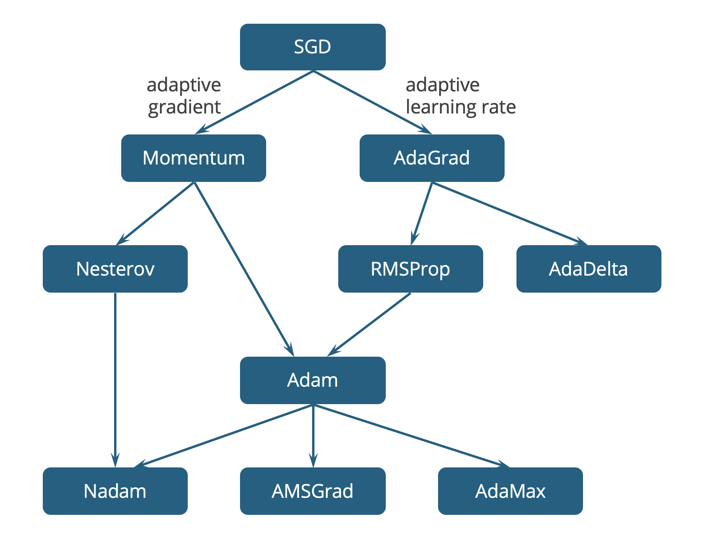
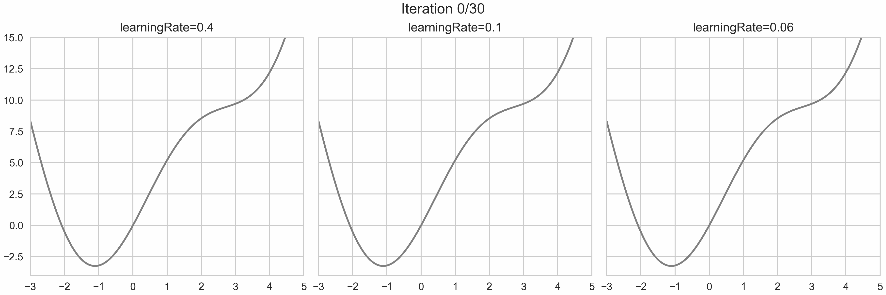
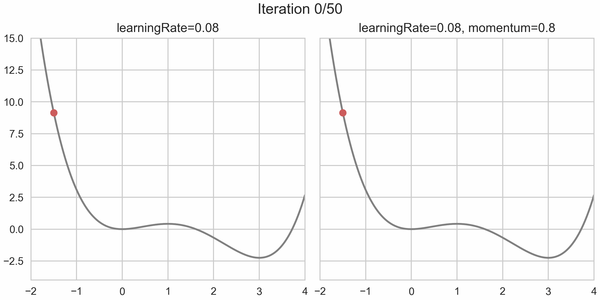

1. Gradient Descent variants
Contents
1. Gradient Descent variants#
In real life, especially when the gradient gets very complicated or is very large, mathematical methods on solving for global minimum are shown to be impossible. There are a number of computational methods have been developed in order to find extrema of a function, where Gradient Descent (GD) is one of the most pupular and is widely used in Machine Learning. This is an iterative method trying to minimize a differentiable function; in the context of Machine Learning, the function to be minimized is nothing but the loss function, \(\mathcal{L}(\mathbf{w})\), where \(\mathbf{w}\) represents model parameters. The gradient of this function is denoted \(\mathbf{g}=g(\mathbf{w})=\nabla \mathcal{L}(\mathbf{w})\).
There is a drawback of GD is that it is designed to find a local minimum, while we need the global minimum of the loss function. Gradient Descent itself is a simple method, and there has been a lot of works proposed to tackle this problem, described in a evolutionary chart as below.
1.1. BGD#
This section is about the most basic idea of the family, Full-Batch Gradient Descent (BGD). Also known as Vanilla GD.
import numpy as np
import matplotlib.pyplot as plt
from matplotlib.animation import FuncAnimation, ArtistAnimation, PillowWriter
plt.style.use(['seaborn', 'seaborn-whitegrid'])
%config InlineBackend.figure_format = 'retina'
Analysis of derivative#
To understand the smart idea behind Gradient Descent, we first analyze the relative position between a random point to its closest local minimum. We have already known derivarive at a point is the representation of instantaneous velocity, but how about its direction? To illustrate this, let’s plot the derivatives at some points of a 1-dimensional function as vectors along the \(x\)-axis.
In this function, there are two critical points at \(x=0\) and \(x=6\), in which the first one is a saddle point and the second one is a local minimum. A very important conclusion can be drawn from this graph is that directional derivatives always point away from the steepest path downwards. In other words, if we move the point in the opposite direction of the derivative, we will end up approach a local minimum or a saddle point. Unfortunately, from the perspective of a single point on the graph and using only gradient, there is no way to regconize if there comes a saddle point.
func = lambda x: 1/128 * (x**4 - 8*x**3)
grad = lambda x: 1/32 * (x**3 - 6*x**2)
left, right = -4, 10
xData = np.linspace(left, right, 1000)
yData = func(xData)
xCritical = np.array([0, 6])
yCritical = func(xCritical)
xRed = np.array([-2])
yRed = func(xRed)
uRed = grad(xRed)
vRed = np.zeros(xRed.shape)
xBlue = np.array([3, 4, 7])
yBlue = func(xBlue)
uBlue = grad(xBlue)
vBlue = np.zeros(xBlue.shape)
fig, ax = plt.subplots(figsize=(5,5))
ax.plot(xData, yData, '-', c='grey')
ax.plot(xCritical, yCritical, 'o', c='grey')
ax.plot(xRed, yRed, 'o', c='indianred')
ax.quiver(xRed, yRed, uRed, vRed, color='indianred', units='xy', scale=1/2)
ax.plot(xBlue, yBlue, 'o', c='cornflowerblue')
ax.quiver(xBlue, yBlue, uBlue, vBlue, color='cornflowerblue', units='xy', scale=1/2)
ax.set_xlim(left, right)
fig.savefig('output/directional_derivative.png', dpi=500, bbox_inches='tight')
plt.close(fig)
Algorithm#
From the above analyses, an iterative method call Gradient Descent has been proposed to find local minima. This algorithm initializes an arbitrary point and update its position at each iteration \(t\) using the formula:
Using this design, the (magnitude of) the gradient gets smaller and smaller and finally approach 0, thus the name of the algorithm. The whole process can be thought as a ball rolling down the hill. There is a coefficient named the learning rate (denoted \(\eta\)) attached to the gradient, controls how large each step is. The value of this hyperparameter should not be either too large (making the convergence not happening) or too small (taking too long to converge). The effect of learning rate is illustrated in the following example, in which we build the algorithm from scratch to find the minimum of the function \(y=x^2+5\sin(x)\) for different values of \(\eta\).
The updating process can also be summarized as learning curves. A couple of stopping conditions are also used such as tolerance (maximum magnitude of gradient) or maximum number of iterations. In the example, I use 50 iterations and set the value of tolerance to 0 to make sure all iterations are used.
def BatchGD(func, grad, eta, nIter, xInit, tol=0):
x = xInit
y = func(x)
xList, yList = np.array(x), np.array(y)
for i in range(nIter):
xDelta = - eta * grad(x)
x = x + xDelta
y = func(x)
xList = np.append(xList, x)
yList = np.append(yList, y)
if np.abs(grad(x)) < tol: break
return np.c_[xList, yList]
func = lambda x: x**2 + 5*np.sin(x)
grad = lambda x: 2*x + 5*np.cos(x)
nIter = 30
xInit = 5
eta1 = 0.4
eta2 = 0.1
eta3 = 0.06
frames1 = BatchGD(func, grad, eta1, nIter, xInit)
frames2 = BatchGD(func, grad, eta2, nIter, xInit)
frames3 = BatchGD(func, grad, eta3, nIter, xInit)
iList = np.arange(nIter+1)
frames = np.c_[iList, frames1, frames2, frames3]
xLeft, xRight = -3, 5
fig, (ax1, ax2, ax3) = plt.subplots(ncols=3, figsize=(12,4), sharey=True, sharex=True, constrained_layout=True)
xGraph = np.linspace(xLeft, xRight, 1000)
yGraph = func(xGraph)
def animate(frame):
i, x1, y1, x2, y2, x3, y3 = frame
ax1.clear()
ax1.set_xlim(xLeft, xRight)
ax1.set_ylim(-4, 15)
ax1.set_title(f'learningRate={eta1}')
line1, = ax1.plot(xGraph, yGraph, c='grey')
point1, = ax1.plot(x1, y1, 'o', c='indianred')
ax2.clear()
ax2.set_title(f'learningRate={eta2}')
line2, = ax2.plot(xGraph, yGraph, c='grey')
point2, = ax2.plot(x2, y2, 'o', c='indianred')
ax3.clear()
ax3.set_title(f'learningRate={eta3}')
line3, = ax3.plot(xGraph, yGraph, c='grey')
point3, = ax3.plot(x3, y3, 'o', c='indianred')
fig.suptitle(f'Iteration {i:.0f}/{nIter}', size=14)
return line1, point1, line2, point2, line3, point3
gif = FuncAnimation(fig, animate, frames, interval=200, blit=False, repeat=True)
plt.close(fig)
path = 'output/batch_gradient_descent.gif'
gif.save(path, dpi=300, writer=PillowWriter())
def compare_gd(listAlgo, listLabel):
fig, ax = plt.subplots()
for algo, label in zip(listAlgo, listLabel):
xList, yList = algo.T
ax.plot(yList, label=label)
ax.legend()
ax.set_xlabel('Iteration')
ax.set_ylabel('FunctionValue')
ax.set_title('Learning Curves')
plt.show()
func = lambda x: x**2 + 5*np.sin(x)
grad = lambda x: 2*x + 5*np.cos(x)
eta1 = 0.4
eta2 = 0.1
eta3 = 0.06
listAlgo = [
BatchGD(func, grad, eta=eta1, nIter=50, xInit=5),
BatchGD(func, grad, eta=eta2, nIter=50, xInit=5),
BatchGD(func, grad, eta=eta3, nIter=50, xInit=5),
]
listLabel = [
f'BatchGD | eta={eta1}',
f'BatchGD | eta={eta2}',
f'BatchGD | eta={eta3}',
]
compare_gd(listAlgo, listLabel)
1.2. SGD#
In this section, we talk about some drawbacks of BGD in practice: (1) its heavy dependence on the intial point, (2) the capability of online learning, (3) the memory cost and how Stochastic Gradient Descent (SGD) comes to the rescue.
Stochastic behaviour#
This Gradient Descent’s variant only considers a part of data (mini-batch, or batch for short) instead of the whole dataset (full-batch) in each iteration to compute the gradient. The term stochastic means we add something random, non-deterministic into the algorithm. At first glance, a common sense is that using a part of data is less accurate, but it turns out SGD is amazingly efficient in practice. Let’s analyze the advantages of SGD over BGD.
SGD makes data in each iteration small enough so that it can be loaded into RAM with ease, this also reduces the computation cost significantly.
Randomness in SGD works as a regularization mechanic, some sort of trade-off between exploration and exploitation. In short-term, noisy steps can lead the ball away from local minima or saddle points; while in long-term, the ball still tends to finish in a valley bottom. For BGD, the ball goes straight to the local minimum; this behaviour is deterministic and thus has no exploration.
SGD enables online learning, which is a very important feature when implementing in practice. When there are new data, SGD treats them as a number of batches and updates to the current model easily, without re-computing gradients for the entire dataset.
As steps in SGD are very noisy, we need to update more frequently than BGD to reach long-term state. This leads to the idea of using more than one epoch (an epoch is a pass over all data samples), which will be described in the next part. Nowadays, the SGD algorithm using the epoch concept is implemented in many modern ML/DL frameworks. Later improved techniques are also developed based on this implementation; however, I still use BGD to make things as simple as possible.
Algorithm#
Input
A dataset \(\mathcal{D}\) having \(N\) samples
A loss function \(\mathcal{L}(\mathbf{w})\) and its gradient \(\nabla{\mathcal{L}}\)
A learning rate, \(\eta\)
A (mini) batch size, \(M\)
A number of epochs, \(E\)
Step 1. Calculate the number of batches \(B=\lceil N/M\rceil\).
Step 2. Initialize model parameters \(\mathbf{w}\) randomly.
Step 3. For \(e=1,2,\dots,E\):
Shuffle the training set \(\mathcal{D}\) to renew batches.
Divide \(\mathcal{D}\) into \(B\) batches, denoted \(\mathcal{B}_1,\mathcal{B}_2,\dots,\mathcal{B}_B\). Each batch has the size of \(M\) and the last batch may have less than \(M\) samples.
For \(b=1,2,\dots,B\):
Compute the gradient \(\nabla{\mathcal{L}(\mathbf{w})}\) for batch \(\mathcal{B}_b\)
Compute the step size by multiplying the learning rate and the gradient
Update the position using the rule: \(\mathbf{w}\leftarrow\mathbf{w}-\eta\,\nabla{\mathcal{L}(\mathbf{w})}\)
2. Enhanced methods#
For simplification purpose, in this section, the function to be minimized is \(y=f(x)\).
2.1. Adaptive gradient#
Momentum#
As far as we know, GD works as a ball rolling down the hill and stops in a valley bottom. However, our ball will stuck in local minima most of the time, then we need some acceleration to helps it cross these traps. A Momentum term (in red) has been introduced to extend the GD’s update rule as follows:
In each step, the ball not only moves downwards as normal GD, but also accumulates momentum from all previous steps:
The amount of information memorized from the previous step is controled by a coefficient, \(\gamma\). The value of this hyperparameter is set \(0<\gamma<1\), typically \(0.9\), forcing earlier steps to have less effect. Visually, the motion of the ball is now more realistic, as it seems to carry inertia.
The benefits of using Momentum includes:
Momentum can help escaping local minima and saddle points
Momentum accelerates the ball so that it moves faster towards the minima
When implemented in SGD, Momentum dampens the oscillations
import numpy as np
import matplotlib.pyplot as plt
from matplotlib.animation import FuncAnimation, ArtistAnimation, PillowWriter
plt.style.use(['seaborn', 'seaborn-whitegrid'])
%config InlineBackend.figure_format = 'retina'
def MomentumGD(func, grad, eta, gamma, nIter, xInit, tol=0):
x = xInit
y = func(x)
xDelta = 0
xList, yList = np.array(x), np.array(y)
for i in range(nIter):
xDelta = gamma * xDelta - eta * grad(x)
x = x + xDelta
y = func(x)
xList = np.append(xList, x)
yList = np.append(yList, y)
if np.abs(grad(x)) < tol: break
return np.c_[xList, yList]
func = lambda x: 1/12 * (3*x**4 - 16*x**3 + 18*x**2)
grad = lambda x: x**3 - 4*x**2 + 3*x
nIter = 50
xInit = -1.5
eta = 0.08
gamma = 0.8
frames1 = BatchGD(func, grad, eta, nIter, xInit)
frames2 = MomentumGD(func, grad, eta, gamma, nIter, xInit)
iList = np.arange(nIter+1)
frames = np.c_[iList, frames1, frames2]
xLeft, xRight = -2, 4
fig, (ax1, ax2) = plt.subplots(ncols=2, figsize=(8,4), sharey=True, sharex=True, constrained_layout=True)
xGraph = np.linspace(xLeft, xRight, 1000)
yGraph = func(xGraph)
def animate(frame):
i, x1, y1, x2, y2 = frame
ax1.clear()
ax1.set_xlim(xLeft, xRight)
ax1.set_ylim(-4, 15)
ax1.set_title(f'learningRate={eta}')
line1, = ax1.plot(xGraph, yGraph, c='grey')
point1, = ax1.plot(x1, y1, 'o', c='indianred')
ax2.clear()
ax2.set_title(f'learningRate={eta}, momentum={gamma}')
line2, = ax2.plot(xGraph, yGraph, c='grey')
point2, = ax2.plot(x2, y2, 'o', c='indianred')
fig.suptitle(f'Iteration {i:.0f}/{nIter}', size=14)
return line1, point1, line2, point2
gif = FuncAnimation(fig, animate, frames, interval=200, blit=False, repeat=True)
plt.close(fig)
path = 'output/momentum_gradient_descent.gif'
gif.save(path, dpi=300, writer=PillowWriter())
Nesterov#
NAG (Nesterov Accelerated Gradient) is an improved version of Momentum. As far as we know, Momentum adds \(\gamma m_{t-1}\) to the current update; we can take advantage of this information to approximately forecast the next position \(x_{t+1}\approx x_t+\gamma m_{t-1}\). The gradient is now computed at this new location. Using this looking ahead strategy, NAG makes the ball smarter instead of letting it rolls down slowly and blindly.
The new equation of \(g_t\) is good at explaining Nesterov but is not convenient for programming. By re-assigning \(x_t \leftarrow x_t+\gamma m_{t-1}\), we end up getting equivalent update rules. All the changes made to Momentum are highlighted in red.
import numpy as np
import matplotlib.pyplot as plt
from matplotlib.animation import FuncAnimation, ArtistAnimation, PillowWriter
plt.style.use(['seaborn', 'seaborn-whitegrid'])
%config InlineBackend.figure_format = 'retina'
def NesterovGD(func, grad, eta, gamma, nIter, xInit, tol=0):
x = xInit
y = func(x)
m = 0
xList, yList = np.array(x), np.array(y)
for i in range(nIter):
m = gamma * m - eta * grad(x)
xDelta = gamma * m - eta * grad(x)
x = x + xDelta
y = func(x)
xList = np.append(xList, x)
yList = np.append(yList, y)
if np.abs(grad(x)) < tol: break
return np.c_[xList, yList]
func = lambda x: 1/12 * (3*x**4 - 16*x**3 + 18*x**2)
grad = lambda x: x**3 - 4*x**2 + 3*x
eta = 0.08
gamma1 = 0.8
gamma2 = 0.9
listAlgo = [
MomentumGD(func, grad, eta, gamma=gamma1, nIter=30, xInit=-1.5),
NesterovGD(func, grad, eta, gamma=gamma1, nIter=30, xInit=-1.5),
NesterovGD(func, grad, eta, gamma=gamma2, nIter=30, xInit=-1.5),
]
listLabel = [
f'Momentum | gamma={gamma1}',
f'Nesterov | gamma={gamma1}',
f'Nesterov | gamma={gamma2}'
]
compare_gd(listAlgo, listLabel)
2.2. Adaptive learning rate#
AdaGrad#
AdaGrad (Adaptive Gradients) The optimizers above remain one learning rate constant through training while AdaGrad adapts learning rate to the parameters, performing low learning rates for parameters associated with dense features, and higher learning rates for parameters associated with sparse features. AdaGrad is suitable for dealing with sparse data, the learning rate will be updated after each iteration.
The current learning rate \(\eta_t\) will be affected by accumulate gradients of all previous steps (in red) so that it will get smaller after each interation. This leads to a slow convergence, so the initiation value of learning rate should be high, typically \(\eta=0.1\). A smoothing term \(\epsilon\) is added to the denominator to prevent divide by zero error.
import numpy as np
import matplotlib.pyplot as plt
from matplotlib.animation import FuncAnimation, ArtistAnimation, PillowWriter
plt.style.use(['seaborn', 'seaborn-whitegrid'])
%config InlineBackend.figure_format = 'retina'
def AdaGrad(func, grad, eta, nIter, xInit, eps=1e-6, tol=0):
x = xInit
y = func(x)
gradInit = grad(x)
xList, yList, gradList = np.array(x), np.array(y), np.array(gradInit)
for i in range(nIter):
etaAdj = eta / np.sqrt(np.sum(gradList**2) + eps)
xDelta = - etaAdj * grad(x)
x = x + xDelta
y = func(x)
gradList = np.append(gradList, grad(x))
xList = np.append(xList, x)
yList = np.append(yList, y)
if np.abs(grad(x)) < tol: break
return np.c_[xList, yList]
func = lambda x: x**2 + 5*np.sin(x)
grad = lambda x: 2*x + 5*np.cos(x)
eta1 = 0.1
eta2 = 0.8
eta3 = 2
eta4 = 7
listAlgo = [
BatchGD(func, grad, eta=eta1, nIter=50, xInit=5),
AdaGrad(func, grad, eta=eta2, nIter=50, xInit=5),
AdaGrad(func, grad, eta=eta3, nIter=50, xInit=5),
AdaGrad(func, grad, eta=eta4, nIter=50, xInit=5),
]
listLabel = [
f'BatchGD | eta={eta1}',
f'AdaGrad | eta={eta2}',
f'AdaGrad | eta={eta3}',
f'AdaGrad | eta={eta4}',
]
compare_gd(listAlgo, listLabel)
RMSprop#
RMSprop (Root Mean Squared Propagation) has been developed in attemp to resolve AdaGrad’s radically diminishing learning rates. It defines \(v_t\), an exponentially moving average which is calculated using \(v_{t-1}\) and the last squared gradient \(g_t^2\).
The part \(\sqrt{v_t+\epsilon}\) is called root mean squared, thus the name of the algorithm. As above formula for \(v_t\) is only optimal for programming, we rewrite its formula to have a better understanding of how \(v_t\) works.
It’s easy to see that the further a gradient \(g_t\) is from the current step (\(T\)), the lower multiplier attached to it. For this reason, we actually accumulate past gradients over a restricted time window, in which gradients significantly contribute to \(v_t\). The number of effective gradients is approximately \((1-\rho)^{-1}\), thus \(\rho\) is usually choosen between \(0.9\) and \(0.98\). For example, \(\rho=0.9\) implies that only last 10 \(g_t\) are effective. Being an extension of AdaGrad, RMSprop also requires \(\eta\) to be high enough, usually in the interval \((0.1,0.5)\).
import numpy as np
import pandas as pd
import matplotlib.pyplot as plt
from matplotlib.animation import FuncAnimation, ArtistAnimation, PillowWriter
plt.style.use(['seaborn', 'seaborn-whitegrid'])
%config InlineBackend.figure_format = 'retina'
def RMSprop(func, grad, eta, gamma, nIter, xInit, eps=1e-6, tol=0):
x = xInit
y = func(x)
v = 0
xList, yList = np.array(x), np.array(y)
for i in range(nIter):
v = gamma * v + (1-gamma) * grad(x)**2
etaAdj = eta / np.sqrt(v + eps)
xDelta = - etaAdj * grad(x)
x = x + xDelta
y = func(x)
xList = np.append(xList, x)
yList = np.append(yList, y)
if np.abs(grad(x)) < tol: break
return np.c_[xList, yList]
func = lambda x: x**2 + 5*np.sin(x)
grad = lambda x: 2*x + 5*np.cos(x)
eta1 = 0.8
eta2, gamma2 = 0.1, 0.9
eta3, gamma3 = 0.2, 0.9
eta4, gamma4 = 0.2, 0.98
listAlgo = [
AdaGrad(func, grad, eta=eta1, nIter=100, xInit=5),
RMSprop(func, grad, eta=eta2, gamma=gamma2, nIter=100, xInit=5),
RMSprop(func, grad, eta=eta3, gamma=gamma3, nIter=100, xInit=5),
RMSprop(func, grad, eta=eta4, gamma=gamma4, nIter=100, xInit=5),
]
listLabel = [
f'AdaGrad | eta={eta1}',
f'RMSprop | eta={eta2} gamma={gamma2}',
f'RMSprop | eta={eta3} gamma={gamma3}',
f'RMSprop | eta={eta4} gamma={gamma4}',
]
compare_gd(listAlgo, listLabel)
AdaDelta#
AdaDelta (Adaptive Delta \(\Delta x\)) has both been developed in around the same time, but independently with RMSprop. Its main idea is very much like RMSprop, with an additional variable \(u_t\), the exponential smoothing of \(\Delta^2 x_t\). Both \(u_t\) and \(v_t\) share the same smoothing parameter, \(\rho\). The update rules of AdaDelta is given below:
The interesting part of AdaDelta is the absence of \(\eta\). The update rules make sense because \(\sqrt{u_t+\epsilon}\) and \(\sqrt{v_t+\epsilon}\) have the same unit with \(x_t\) and \(g_t\), respectively. But keep in mind that large values of \(\rho\) will make the convergence slow.
import numpy as np
import matplotlib.pyplot as plt
from matplotlib.animation import FuncAnimation, ArtistAnimation, PillowWriter
plt.style.use(['seaborn', 'seaborn-whitegrid'])
%config InlineBackend.figure_format = 'retina'
def AdaDelta(func, grad, gamma, nIter, xInit, tol=0, eps=1e-6):
x = xInit
y = func(x)
xDelta = 0
u = 0
v = 0
xList, yList = np.array(x), np.array(y)
for i in range(nIter):
u = gamma*u + (1-gamma)*xDelta**2
v = gamma*v + (1-gamma)*grad(x)**2
eta = np.sqrt(u+eps) / np.sqrt(v+eps)
xDelta = -eta * grad(x)
x += xDelta
y = func(x)
xList = np.append(xList, x)
yList = np.append(yList, y)
if np.abs(grad(x)) < tol: break
return np.c_[xList, yList]
func = lambda x: x**2 + 5*np.sin(x)
grad = lambda x: 2*x + 5*np.cos(x)
xInit = 4
nIter = 1000
gamma1 = 0.5
gamma2 = 0.8
gamma3 = 0.9
gamma4 = 0.98
listAlgo = [
AdaDelta(func, grad, gamma1, nIter, xInit),
AdaDelta(func, grad, gamma2, nIter, xInit),
AdaDelta(func, grad, gamma3, nIter, xInit),
AdaDelta(func, grad, gamma4, nIter, xInit),
]
listLabel = [
f'AdaDelta | gamma={gamma1}',
f'AdaDelta | gamma={gamma2}',
f'AdaDelta | gamma={gamma3}',
f'AdaDelta | gamma={gamma4}',
]
compare_gd(listAlgo, listLabel)
2.3. Addams family#
Adam#
Adam (Adaptive Momentum) is the combination of Momentum and RMSprop. It inherits \(m_t\), the exponential smoothing of gradient from Momentum and \(v_t\), the exponential smoothing of squared gradient from RMSprop. According to the author of Adam, the inititialize value of \(m_t\) and \(v_t\) are 0 so they are biased towards 0, especially with a large smoothing factor. Adam fixes these biases by computing the corrected version of exponential smoothing, \(\hat{m}_t\) and \(\hat{v}_t\).
The original paper of Adam denotes \(\beta_1\) and \(\beta_2\) for smoothing coefficients. However, I keep the notations \(\gamma\) and \(\rho\) from Momentum and RMSprop to make things consistent. The default values suggested by the author are \(\gamma=0.9\) and \(\rho=0.999\). Because \(\eta\) is a constant, a higher value will lead to faster convergence. Adam has the advantages of both Momentum and RMSprop: it can work well with sparse data, has a low learning time and can work well in online and non-stationary settings.
import numpy as np
import matplotlib.pyplot as plt
from matplotlib.animation import FuncAnimation, ArtistAnimation, PillowWriter
plt.style.use(['seaborn', 'seaborn-whitegrid'])
%config InlineBackend.figure_format = 'retina'
def Adam(func, grad, eta, eps, beta1, beta2, nIter, xInit, tol=0):
x = xInit
y = func(x)
m = 0
v = 0
xList, yList = np.array(x), np.array(y)
for i in range(1,nIter):
m = beta1 * m + (1-beta1)*grad(x)
v = beta2 * v + (1-beta2)*grad(x)**2
m_hat = m/(1-beta1**i)
v_hat = v/(1-beta2**i)
xDelta = -eta * m_hat/ (np.sqrt(v_hat) + eps)
x = x + xDelta
y = func(x)
xList = np.append(xList, x)
yList = np.append(yList, y)
if np.abs(grad(x)) < tol: break
return np.c_[xList, yList]
func = lambda x: x**2 + 5*np.sin(x)
grad = lambda x: 2*x + 5*np.cos(x)
nIter = 50
xInit = 5
eta1 = .1
eta2 = .3
eta3 = .5
eps = 1e-8
beta1 = .9
beta2 = .999
frames1 = Adam(func, grad, eta1, eps, beta1, beta2, nIter, xInit)
frames2 = Adam(func, grad, eta2, eps, beta1, beta2, nIter, xInit)
frames3 = Adam(func, grad, eta3, eps, beta1, beta2, nIter, xInit)
iList = np.arange(1,nIter+1)
frames = np.c_[iList, frames1, frames2, frames3]
xLeft, xRight = -3, 5
fig, (ax1, ax2, ax3) = plt.subplots(ncols=3, figsize=(12,4), sharey=True, sharex=True, constrained_layout=True)
xGraph = np.linspace(xLeft, xRight, 1000)
yGraph = func(xGraph)
def animate(frame):
i, x1, y1, x2, y2, x3, y3 = frame
ax1.clear()
ax1.set_xlim(xLeft, xRight)
ax1.set_ylim(-4, 20)
ax1.set_title(f'eta={eta1}')
line1, = ax1.plot(xGraph, yGraph, c='grey')
point1, = ax1.plot(x1, y1, 'o', c='indianred')
ax2.clear()
ax2.set_title(f'eta={eta2}')
line2, = ax2.plot(xGraph, yGraph, c='grey')
point2, = ax2.plot(x2, y2, 'o', c='indianred')
ax3.clear()
ax3.set_title(f'eta={eta3}')
line3, = ax3.plot(xGraph, yGraph, c='grey')
point3, = ax3.plot(x3, y3, 'o', c='indianred')
fig.suptitle(f'Iteration {i:.0f}/{nIter}', size=14)
return line1, point1, line2, point2, line3, point3
gif = FuncAnimation(fig, animate, frames, interval=200, blit=False, repeat=True)
plt.close(fig)
path = 'output/adam.gif'
gif.save(path, dpi=300, writer=PillowWriter())
AdaMax#
While Adam only updates \(v_t\) using current gradient \(g_t\) and past gradient \(v_{t-1}\), it scales the gradient inversely proportionally with \(L_2\) norm, AdaMax can generalize this update to the \(L_p\) norm. But with large value of \(p\), norms become unstable, however \(L_\infty\) also generally exhibits stable behavior: \(\rho^\infty v_{t-1} + (1-\rho^\infty)|g_t|^\infty=\max(\rho v_{t-1},|g_t|)\).
AdaMax can perform better than Adam, especially in embedding problems.
Nadam#
Nadam (Nesterov accelerated Adam) is a combination of NAG and Adam. NAG performs more accurately than standard momentum because it allows to perform a more accurate step in the gradient direction by updating the parameters with the momentum step before computing the gradient.
AMSGrad#
AMSGrad is a variant of Adam which revisits the adaptive learning rate component in Adam and changes it to ensure that the current \(v\) is always larger than the \(v\) from the previous time step. In Adam, it has been observed that some minibatches provide large and informative gradients, but as these minibatches only occur rarely, exponential averaging diminishes their influence, which leads to poor convergence. By selecting max \(v\), AMSGrad results in a non-increasing step size, which avoids the problems suffered by Adam.
References#
ruder.io - An overview of gradient descent optimization algorithms
web.stanford.edu - Adaptive Subgradient Methods for Online Learning and Stochastic Optimization
cs229.stanford.edu - Incoporating Nesterov Momentum into Adam
distill.pub - Why Momentum really works
towardsdatascience.com - Stochastic Gradient Descent with momentum
blog.paperspace.com - Intro to optimization in deep learning: Momentum, RMSProp and Adam
♥ By Quang Hung x Thuy Linh ♥